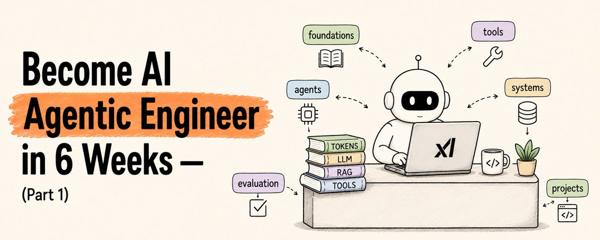
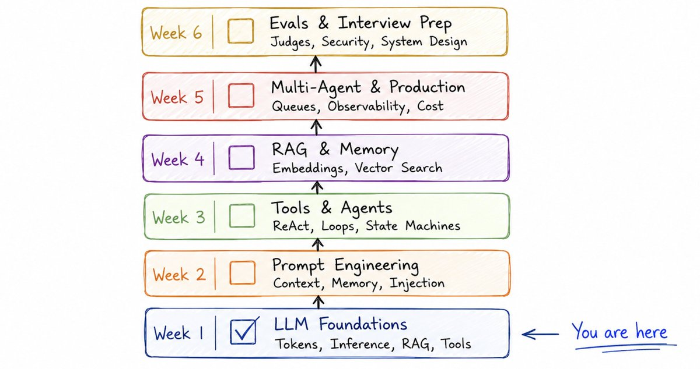
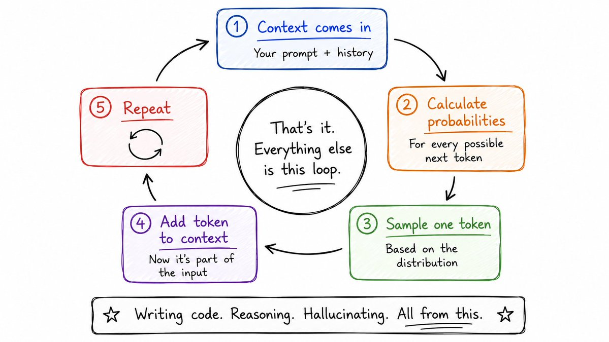
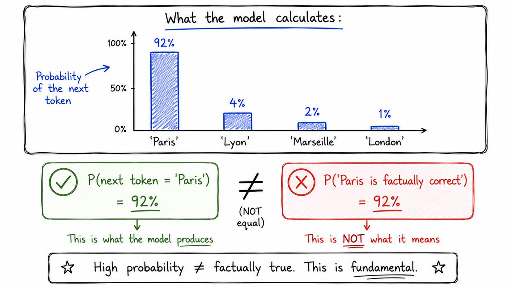
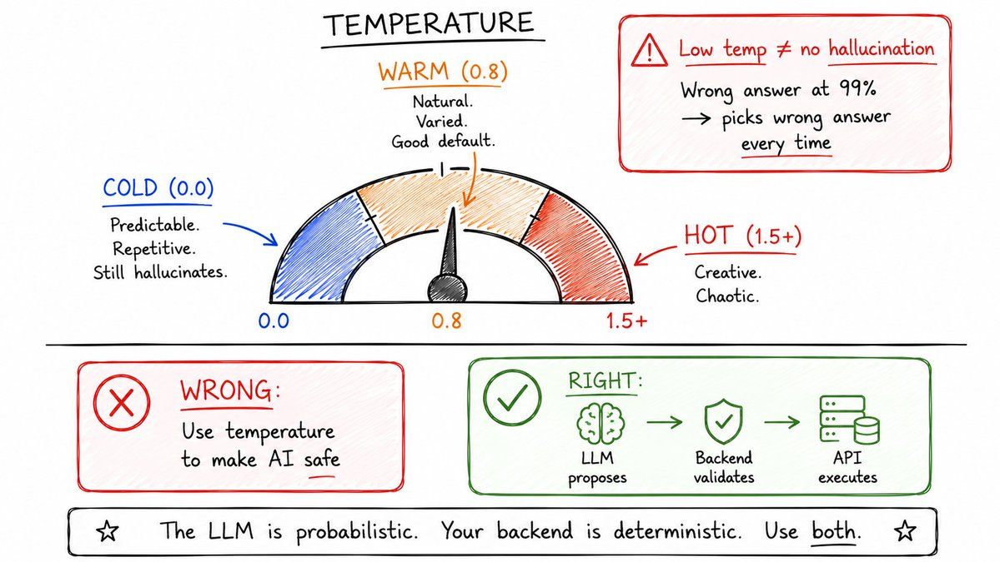
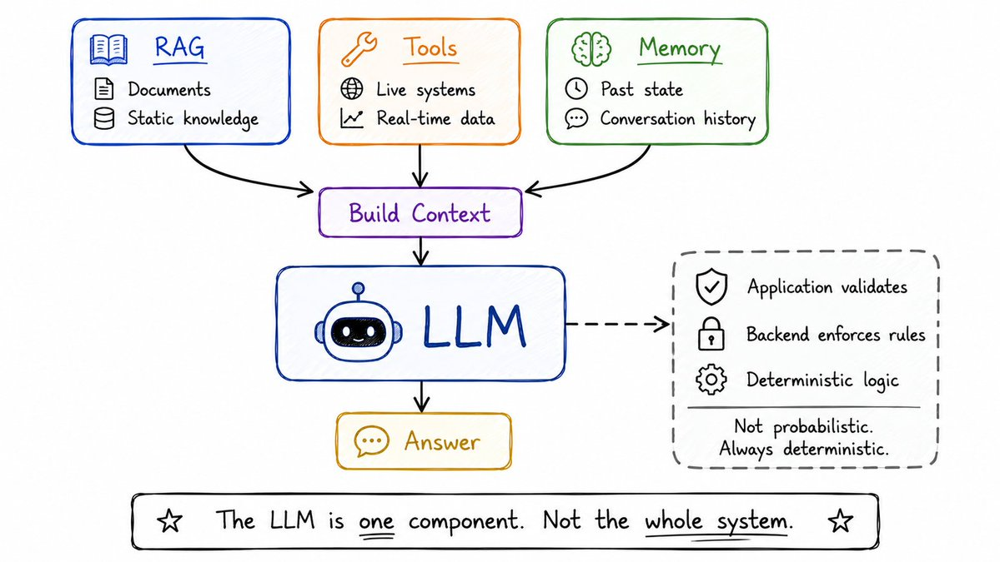
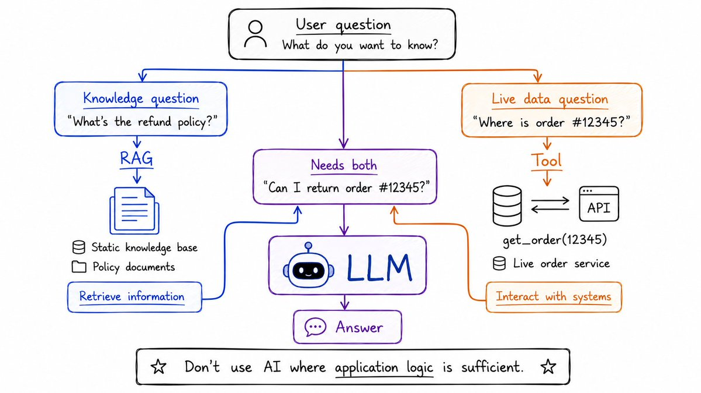
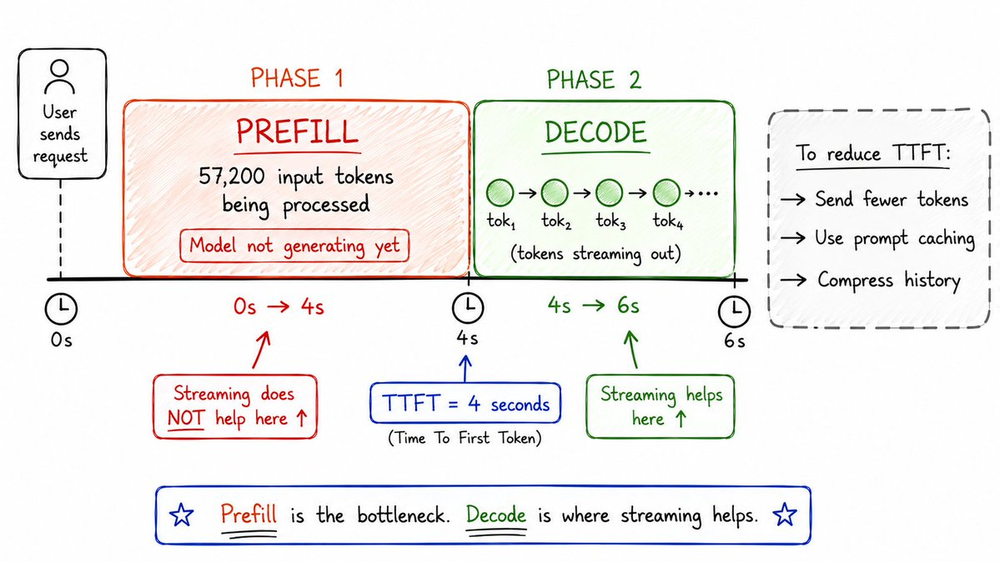

Week 1 · LLM Foundations · 44 万浏览长文解读
大多数开发者学 AI 的方式是抄教程——装 LangChain、贴 prompt、搭 chatbot——然后到生产就崩。Agent 在幻觉、context 撑爆、成本失控。这篇 44 万浏览的 X 长文给出了一条 6 周路线图(共 6 part),Week 1 从零讲透 LLM:token / inference / temperature / hallucination / context window / prefill / decode / TTFT / RAG / tools。本文是 Part 1 的中文解读,所有原文代码片段和 ASCII 结构图都做了 EN/CN 切换 + 一键复制。

RAHUL · @SAIRAHUL1 · 2026/08/30 · BECOME AI AGENTIC ENGINEER IN 6 WEEKS · PART 1
作者是谁。Rahul (@sairahul1)·AI 工程师 + Builder,长期在 X 写 AI engineering 一手观察。他的内容风格:不绕 demo,直接讲"为什么 production 会崩"。Week 1 这篇是 6 周系列的第一篇——目标读者是已经会写后端、想转 AI 工程的工程师。
这篇文章在讲什么。一句话:不是装框架、不是 prompt 大全——是让你真正理解模型里在发生什么,然后围着它造系统。Week 1 走完 10 个底层概念:token、inference、temperature、hallucination、context window、prefill、decode、TTFT、RAG、tools。每一节末尾配 5 道面试题——不是给你答案,是让你把心智模型跑通。
为什么这篇值得读。绝大多数 AI 教程停在"装 LangChain 跑 demo"。Rahul 的角度是:你之前以为"模型不够好"的很多问题,其实是这 10 个底层概念里某一环没装对——temperature 不是"防幻觉"的开关、RAG 不消除幻觉、TTFT 不被 streaming 优化、context 不是"塞越多越好"。这一篇把那些被广泛误解的概念一次讲透。
怎么读这篇文章。11 章节,每章顶部金句框 + 口语化中文翻译(原文英文保留,段落级 EN/CN 切换)。原文嵌入的 31 段代码片段和 ASCII 结构图(概率表、流程图、RAG vs Tools 对比、TTFT 测量、思维导图)全部按 `.code-block` 渲染,带 EN/CN 切换 + 一键复制。最后是 5 道面试题 + 思维导图总结 + 引用区。

原文配图 · Rahul (@sairahul1) · 2026/08/30 · 6 周路线图全览:Week 1 LLM 基础 → Week 2 Prompt/Context → Week 3 Tools/Agent → Week 4 RAG/Memory → Week 5 Multi-Agent/Production → Week 6 Evals/Security/面试。
这里是 6 周系列要走的全部内容:
Week 1 — LLM Foundations(本篇)
Tokens、inference、temperature、hallucination、context windows、prefill、decode、TTFT、RAG、tools
Week 2 — Prompt & Context Engineering
System/user/tool messages、instruction hierarchy、dynamic prompts、prompt injection、context rot、memory
Week 3 — Tool Calling & Agent Architecture
Schemas、validation、execution loops、retries、parallel tools、core agent loop、ReAct、state machines
Week 4 — RAG & Memory
Chunking、embeddings、vector search、hybrid retrieval、reranking、working/episodic/semantic memory
Week 5 — Multi-Agent Systems & Production
Supervisor/worker、async execution、checkpoints、rate limits、observability、token budgets、cost controls
Week 6 — Evals, Security & Interview Prep
Golden datasets、LLM-as-judge、prompt injection、sandboxing、system design interviews、3-4 real projects
最终目标:能面试 AI Engineer / Applied AI Engineer / Agent Engineer / LLM Engineer 这些岗位——比只学 prompt 的人强一档。Agent 系统涉及 distributed execution、APIs、concurrency、queues、observability——这些你后端早就熟。
现在打地基。
Everything in AI engineering flows from this: an LLM does not search a database of facts. It does not verify what it says. It does not "know" things the way you know your name.
— RAHUL · AI AGENT ENGINEER IN 6 WEEKS · WEEK 1
所有 AI engineering 的设计决策,都从这一条流出来。
一个 LLM 不搜索事实数据库。
它不验证自己说的话。
它不像你知道自己的名字那样"知道"什么。
它实际做的——一步一步:
1. You send text (the context) 2. The model converts it to tokens 3. For each token position, it calculates probabilities over the entire vocabulary 4. It samples the next token from that distribution 5. Adds it to the context 6. Repeats until done
1. 你送入文本(也就是 context) 2. 模型把它切成 token 3. 对每个 token 位置,在整个词表上算概率分布 4. 从分布里采样下一个 token 5. 加进 context 6. 重复直到结束
整个机制就是这样。
写代码、回答问题、幻觉、推理——全部都来自一遍又一遍地做这件事、做得够好。
你一旦真正内化这一点,剩下的全说得通。
模型从来不读原始文本。
它读 token。
"Building an AI agent" → ["Build", "ing", "an", "AI", "agent"] → [4821, 513, 271, 37, 44]
"Building an AI agent" → ["Build", "ing", "an", "AI", "agent"] → [4821, 513, 271, 37, 44]
不一定是完整的词,是词的碎片。每一个 token 拿到一个数字 ID。
经验法则:1 token ≈ 0.75 个英文单词
1,000 tokens ≈ 750 词 · 128,000 token context ≈ 一整本小说
为什么不直接用整词?
语言是脏的——新词、typo、代码、混合语言。Token 是固定可复用的积木,即使一个词模型从没见过,也能拆成见过的碎片来理解。
生产含义:
你按 token 付费。延迟随 token 数量增长。
100,000 token 的输入和 1,000 token 的输入不是同一种请求。
Input tokens → charged for processing Output tokens → charged for generation (usually higher rate) Total cost → (input × input_rate) + (output × output_rate)
输入 token → 按处理费计费 输出 token → 按生成费计费(通常更贵) 总成本 → (输入 × 输入单价) + (输出 × 输出单价)
永远数你的 token,永远。

原文配图 · Rahul (@sairahul1) · 2026/08/30 · 'Paris' 这个 token 的概率分布:92% / 4% / 2% / 1% / 1%——92% 概率不等于 92% 正确。
"92% 概率"到底什么意思
假设模型生成:
"The capital of France is Paris"
背后,它生成 "Paris" 时:
Paris → 92% Lyon → 4% Marseille → 2% London → 1% ... → 1%
Paris → 92% Lyon → 4% Marseille → 2% London → 1% ... → 1%
模型给了 "Paris" 92% 的概率作为下一个 token。
这不意味着:
P("Paris 在事实上正确") = 92%
这两句话完全是两码事。
现在想象:
User: "Dr. John Smith invented the HyperFlux battery in 2017.
What university was he working at?"
User: "Dr. John Smith 在 2017 年发明了 HyperFlux 电池。
他当时在哪所大学工作?"
Dr. John Smith 和 HyperFlux 电池是虚构的。编出来的。
但模型可能生成:
"Stanford University" → 78%
因为在那个 context 里,"Stanford" 是合理的续写。
高 token 概率 ≠ 事实正确。
这就是幻觉理解的起点。
同样的 prompt、同样的模型、每次回答都不一样。
为什么?
采样。
假设概率是这样:
"good" → 40% "great" → 30% "interesting" → 15% "useful" → 10% other → 5%
"good" → 40% "great" → 30% "interesting" → 15% "useful" → 10% 其他 → 5%
模型不总是选"好"。
它像掷一个加权骰子一样从这个分布里采样。
Run 1 → "great" Run 2 → "good" Run 3 → "great" Run 4 → "interesting
第 1 次 → "great" 第 2 次 → "good" 第 3 次 → "great" 第 4 次 → "interesting
温度控制的就是怎么采样。
Temperature = 0.0 → almost always picks the highest probability token
safe, predictable, repetitive
Temperature = 0.8 → natural variation, good default
Temperature = 1.5 → more creative, sometimes incoherent
Temperature = 0.0 → 几乎总是选概率最高的 token
安全、可预测、重复
Temperature = 0.8 → 自然变化,推荐的默认值
Temperature = 1.5 → 更有创造性,有时会前言不搭后语
生产环境里那条该记住的规则:
低温度不等于防止幻觉。
这几乎是每个新手都会踩的坑。
想象模型的分布是这样:
把温度设到零。
模型现在会自信地生成那个错的答案。
每一次都生成。
你没让它更真实——你只是让幻觉更可重复。
现在把这三行写进你的心智模型:
DETERMINISTIC ≠ CORRECT CONFIDENT ≠ CORRECT HIGH PROBABILITY ≠ FACTUALLY TRUE
确定性 ≠ 正确 自信 ≠ 正确 高概率 ≠ 事实正确
生产含义:
对金融 agent、退款系统、任何有真实后果的事:
// DANGEROUS
temperature = 0 // this does NOT make it safe
// RIGHT
LLM proposes → { action: "refund", amount: 100 }
Backend validates:
- Is amount within permitted limits?
- Does user own this order?
- Has order already been refunded?
- Does policy permit refund?
Then: Payment API
// 危险做法
temperature = 0 // 这并不会让它变安全
// 正确做法
LLM 提议 → { action: "refund", amount: 100 }
后端校验:
- 金额在允许范围内吗?
- 这个订单归这个用户吗?
- 已经退过款了吗?
- 政策允许退款吗?
然后:Payment API
你的后端做校验。LLM 做提议。
幻觉不是他们忘修的 bug。
它是 LLM 工作方式的直接后果。
想象你问:
"RahulStore 的退款政策是什么?"
RahulStore 不存在。
模型还是得产出概率。
它的训练数据里可能出现过百万次这样的模式:
"What is the refund policy?" "Returns accepted within 30 days." "30-day money-back guarantee." "Items returnable within 30 days."
"什么是退款政策?" "30 天内可退。" "30 天退款保证。" "30 天内可退货。"
所以当它看到 "RahulStore's refund policy is"——续写 "30 days" 看起来极其合理。
模型没有这一步:
Step 1: Does RahulStore exist? Step 2: Do I have verified information? Step 3: Check source. Step 4: Answer only if verified.
第 1 步:RahulStore 存在吗? 第 2 步:我有验证过的信息吗? 第 3 步:查一下来源。 第 4 步:只在验证过之后回答。
它的核心过程仍然是:
给定这个 context → 下一个 token 是什么?
这就是幻觉听起来可信的原因。
模型没在撒谎。它在做被训练的事——产出合理续写。
三种幻觉要知道:
1. No information exists at all → RahulStore doesn't exist. Model invents. 2. Information exists but is stale → Policy changed yesterday. Model answers from training. 3. Information is provided but misread → Correct document in context. Model misunderstands it.
1. 信息根本不存在 → RahulStore 不存在。模型编造。 2. 信息存在但已过期 → 政策昨天改了。模型按训练数据回答。 3. 信息给了但读错 → context 里文档对的。模型理解错了。
三种在生产里都会发生。每种要不同的修法。
现在问自己:如果 temperature = 0、问同一个问题 100 次、每次都得到 "30 days"——这让它事实正确了吗?
没有。
你证明的是一致性,不是正确性。
这一条在造 evals 的时候重要得多。

原文配图 · Rahul (@sairahul1) · 2026/08/30 · 包在 LLM 周围的整套系统:用户问题 → App → RAG / Tools / Memory → 构 context → LLM → 答案。
这就是 RAG、tools、validators、agent 架构存在的原因。
LLM 的内部契约是:
func GenerateAnswer(context string) string // core objective: produce a likely continuation // NOT: return only verified facts
func GenerateAnswer(context string) string // 核心目标:产出合理续写 // 不是:只返回已验证的事实
这些是不同的契约。
所以我们在 LLM 周围造系统:
USER
│
↓
APPLICATION
│
┌───────────┼───────────┐
↓ ↓ ↓
RAG Tools Memory
│ │ │
↓ ↓ ↓
Documents Live systems Past state
│ │ │
└───────────┼───────────┘
↓
Build context
↓
LLM
↓
Generate tokens
↓
Answer
用户
│
↓
应用层
│
┌───────────┼───────────┐
↓ ↓ ↓
RAG 工具 记忆
│ │ │
↓ ↓ ↓
文档 实时系统 过去状态
│ │ │
└───────────┼───────────┘
↓
构建 context
↓
LLM
↓
生成 token
↓
答案
我们是在试图驾驭一个概率生成器,同时用可靠软件把它围起来。
这是 AI engineering 的核心洞察。
LLM 是一个组件,不是整个系统。
你有一个客服 agent。
用户问:
"RahulStore 的退款政策是什么?"
没有 grounding 的情况下:
模型权重 → 学到的模式 → "大概 30 天..."
有 grounding 的情况下(RAG):
Application retrieves current policy document
↓
Policy: "Products may be returned within 14 days.
Opened electronics cannot be returned."
↓
Passes it to LLM in context
↓
LLM answers using the supplied document
应用检索当前政策文档
↓
政策: "产品可在 14 天内退货。
已开封电子产品不可退。"
↓
把它放进 LLM 的 context
↓
LLM 用给到的文档回答
RAG = Retrieval-Augmented Generation。
拆开:
这就是最高层的全部。
常见错误:
人们说"我们把它存进 RAG"。
RAG 不是数据库。RAG 是一种模式。
你可以从 SQL、Elasticsearch、向量数据库、知识图谱、API 检索——然后喂给模型。
RAG 不做的最重要的事:
它不消除幻觉。
即使检索完美:
Question ↓ Retriever ↓ CORRECT DOCUMENT ✓ ↓ LLM ↓ Answer could still be wrong
问题 ↓ 检索器 ↓ 对的文档 ✓ ↓ LLM ↓ 答案仍然可能错
因为模型仍然可能:
假设政策是这样:
"已开封电子产品不可退。"
用户问:"我能退我那台已开封的笔记本吗?"
模型可能仍然回答"可以",因为在 14 天窗口内。
它漏掉了例外。
这是推理失败,不是检索失败。
你得能分清这两者。
正确的检索 ≠ 正确的答案。

原文配图 · Rahul (@sairahul1) · 2026/08/30 · RAG vs Tools:RAG 拿静态知识,Tools 拿实时数据 / 触达真实系统。
两个不同的问题。两种不同的架构。
Question: "What is the refund policy?"
↓
RAG — retrieve knowledge
↓
Static knowledge base, policy documents
问题: "退款政策是什么?"
↓
RAG — 检索知识
↓
静态知识库,政策文档
Question: "Where is order #12345 right now?"
↓
Tool call — get live data
↓
get_order(12345) → Order service → DB
问题: "订单 #12345 现在在哪?"
↓
工具调用 — 拿实时数据
↓
get_order(12345) → 订单服务 → 数据库
粗略讲:
那如果问:"我能退订单 #12345 吗?"
这需要两者:
User question
↓
┌──────────┴──────────┐
↓ ↓
get_order(12345) retrieve_policy()
│ │
↓ ↓
Order: laptop, Policy: 14 days,
opened, 5 days ago opened electronics: NO
│ │
└──────────�──────────┘
↓
LLM
↓
"No. Opened electronics
cannot be returned.
用户问题
↓
�──────────┴──────────┐
↓ ↓
get_order(12345) retrieve_policy()
│ │
↓ ↓
订单: 笔记本, 政策: 14 天,
已开封, 5 天前 已开封电子产品: 不可退
│ │
└──────────┬──────────┘
↓
LLM
↓
"不能。已开封电子产品
不可退。
该记的设计规则:
如果你有两个可预测的依赖,后端 orchestration 就能确定性处理。
只有在工具组合很多、序列真的动态的时候才用 LLM planner。
应用逻辑够用的时候别用 AI。
Context window 是模型在一次请求里最多能处理的文本量。
128,000 token context window = model's working space System instructions → 2,000 tokens Tool definitions → 5,000 tokens Conversation history → 30,000 tokens Retrieved documents → 60,000 tokens User question → 200 tokens ───────────────────────────────────────── Total input → 97,200 tokens
128,000 token context window = 模型的工作空间 系统指令 → 2,000 tokens 工具定义 → 5,000 tokens 对话历史 → 30,000 tokens 检索到的文档 → 60,000 tokens 用户问题 → 200 tokens ───────────────────────────────────────── 输入合计 → 97,200 tokens
新手会犯的错:
Context window 大 = 把所有东西塞进去
不对。
想象问一个开发者:"这 20 行函数里的 race condition 在哪?"
但你不给 20 行——给整个 Linux 内核 + 整个公司 monorepo + 那 20 行。
答案可能在里面。但找到它难得多。
LLM 也有这个问题。
更多 context 有三个真实代价:
1. Cost Providers charge per token. 100,000 input tokens ≠ 2,000 input tokens in price. 2. Latency The model processes all input before generating the first output token. Bigger input → longer wait before first response. 3. Quality More irrelevant context → harder to find what matters → worse answer quality
1. 成本 提供商按 token 计费。 100,000 输入 token 和 2,000 输入 token 价格不一样。 2. 延迟 模型在生成第一个输出 token 之前要把所有输入都处理完。 输入越大 → 第一次响应前等得越久。 3. 质量 越多无关 context → 越难找到重点 → 答案质量越差
Context engineering 不是"塞更多"。
是"塞对的信息"。

原文配图 · Rahul (@sairahul1) · 2026/08/30 · Prefill(处理输入)和 Decode(生成输出)是 LLM 推理的两个独立阶段——延迟特征完全不同。
假设你送 57,200 个输入 token、要 300 个输出 token。
有两个独立的阶段。
阶段 1 — Prefill:
57,200 input tokens
↓
MODEL processes input
↓
(model is NOT generating output yet)
57,200 输入 token
↓
模型处理输入
↓
(模型此时还没开始生成输出)
模型在你生成第一个输出 token 之前处理完整个输入。
这叫 Prefill。
阶段 2 — Decode:
Output token 1 → sent to user Output token 2 → sent to user Output token 3 → sent to user ... Output token 300 → sent to user
输出 token 1 → 发给用户 输出 token 2 → 发给用户 输出 token 3 → 发给用户 ... 输出 token 300 → 发给用户
一次生成一个 token。这叫 Decode。
TTFT = Time To First Token
User presses Send at: 12:00:00 First token appears at: 12:00:04 TTFT = 4 seconds
用户在: 12:00:00 发送 第一个 token 在: 12:00:04 出现 TTFT = 4 秒
这是用户开始等待到看见任何东西的时间。
巨大输入会显著拉长 TTFT,因为 prefill。
Streaming:
不 streaming:
Generate all 300 tokens → then send everything at once User waits the whole time
生成全部 300 token → 然后一次性全发 用户整个过程都在等
streaming:
Token 1 → user sees it Token 2 → user sees it ...
Token 1 → 用户立刻看到 Token 2 → 用户立刻看到 ...
用户边生成边看到输出。
关键点:
Streaming 不减少 TTFT。
如果 prefill 要 4 秒,streaming 也救不了。
4 sec prefill (streaming can't help here)
↓
first token (now streaming helps)
↓
tokens flow to user as they generate
4 秒 prefill(streaming 在这帮不上)
↓
第一个 token(streaming 从这里开始帮忙)
↓
token 边生成边流向用户
Streaming 减少的是 decode 阶段的感知延迟。
它不加速 prefill。
如果你需要在生产里降低 TTFT:
1. Reduce input tokens (most impactful) → Better retrieval: relevant section, not whole document → Compress conversation history → Trim tool definitions 2. Prompt caching (prefix caching) → Cache the static part of input → Provider doesn't reprocess unchanged prefix 3. Smaller/faster model for time-sensitive tasks 4. Parallel prefill across providers
1. 减少输入 token(最有效) → 更好的检索:取相关章节,不是整篇文档 → 压缩对话历史 → 砍掉不必要的工具定义 2. Prompt caching(prefix caching) → 缓存输入里的静态部分 → 提供商不重算没变的前缀 3. 时间敏感任务用更小 / 更快的模型 4. 跨提供商并行 prefill

原文配图 · Rahul (@sairahul1) · 2026/08/30 · 把 AI pipeline 拆成可测量的阶段,找到「真正的失败点」——不是「AI 准确率 85%」。
这是把工程师和教程追随者分开的生产思维。
假设你的客服 agent 只有 85% 时间回答正确。
弱的诊断:
"我们 AI 的准确率是 85%。"
强的工程诊断:
Retrieval recall → 100% ✓ Correct doc ranked #1 → 98% ✓ Context actually included → 97% ✓ LLM reasoning correctly → 90% Correct final output → 85% → Problem is in the reasoning stage, not retrieval → Investigate: prompt construction, context ordering, conflicting history, model misunderstanding
检索召回率 → 100% ✓ 对的文档排第一 → 98% ✓ context 真的被送进去了 → 97% ✓ LLM 推理正确 → 90% 最终输出正确 → 85% → 问题在推理阶段,不在检索 → 调查:prompt 构建、context 排序、冲突的历史、模型理解错误
把每条 AI pipeline 拆成可测量的阶段。
然后你就知道该调查哪里。
Question ↓ Query understanding ← failure? ↓ Retrieval ← failure? ↓ Ranking ← failure? ↓ Context selection ← failure? ↓ LLM reasoning ← failure? ↓ Answer generation ← failure?
问题 ↓ 理解查询 ← 这里失败? ↓ 检索 ← 这里失败? ↓ 排序 ← 这里失败? ↓ 选 context ← 这里失败? ↓ LLM 推理 ← 这里失败? ↓ 生成答案 ← 这里失败?
"我们的 RAG 不行"不是工程诊断。
"检索召回率 96% 但答案准确率 68%,所以失败在推理或 context 构建"——这是工程诊断。
Week 6 我们会为每个阶段造 evals。

原文配图 · Rahul (@sairahul1) · 2026/08/30 · 思维导图:你这一篇之后的心智模型——9 块积木拼起来就是 AI engineering 的基础。
你现在知道的事
你开始读这篇的时候没有心智模型。
现在你有:
TOKENS Text → pieces → numbers → model reads numbers INFERENCE Context → probability distribution → sample next token → repeat TEMPERATURE Controls sampling → low = consistent, not correct → high = varied Deterministic ≠ Correct HALLUCINATION Model produces plausible continuations, not verified facts Three kinds: no info, stale info, present info misread High confidence ≠ High accuracy CONTEXT WINDOW Model's working memory for the request More ≠ better → costs money, adds latency, hurts quality GROUNDING / RAG Give model current information instead of relying on training Retrieve → Augment context → Generate RAG reduces hallucination, does not eliminate it TOOLS Interact with live systems, not static documents get_order() ≠ search policy documents PREFILL + DECODE + TTFT Prefill = processing input Decode = generating output TTFT = time to first token Streaming helps decode, not prefill LLM IS ONE COMPONENT Not the whole system Surround it with retrieval, tools, validation, deterministic logic
TOKENS(分词) 文本 → 碎片 → 数字 → 模型读数字 INFERENCE(推理) context → 概率分布 → 采样下一个 token → 重复 TEMPERATURE(温度) 控制采样 → 低 = 一致,不正确 → 高 = 多变 确定性 ≠ 正确 HALLUCINATION(幻觉) 模型产出合理续写,不产出验证过的事实 三类:无信息、信息过期、信息给到了但读错 高置信 ≠ 高准确 CONTEXT WINDOW(context 窗口) 模型对这次请求的工作记忆 越多 ≠ 越好 → 多花钱、加延迟、损质量 GROUNDING / RAG(接地 / 检索增强生成) 给模型当前信息,而不是依赖训练数据 检索 → 增强 context → 生成 RAG 减少幻觉,不消除幻觉 TOOLS(工具) 触达真实系统,不是静态文档 get_order() ≠ 搜政策文档 PREFILL + DECODE + TTFT(预填 + 解码 + 首字延迟) Prefill = 处理输入 Decode = 生成输出 TTFT = 第一个 token 的时间 Streaming 帮 Decode,不帮 Prefill LLM 是一个组件,不是整个系统 围着它放检索、工具、校验、确定性逻辑
这是所有后续内容的地基。
这是你会在 AI Engineer / Agent Engineer 面试里被问到的题型。先自己推一遍,再看答案。
生产环境里的幻觉定位。你的 agent 有 100% 检索准确率,但答案准确率只有 85%。走一遍 pipeline 每个阶段,指出失败可能在哪。你会先量什么?
› pipeline:Query 理解 → 检索 → 排序 → context 选择 → LLM 推理 → 答案生成。100% 检索率说明前 3 阶段没问题。把后 3 阶段的指标拆出来——LLM 推理准确率、context 构造正确率、最终答案正确率。先看推理,再看 context 排序/构造。
算一次 context 账单。你的客服 agent 每次送:2,000 token 系统 prompt + 5,000 token 工具定义 + 30,000 token 对话历史 + 60,000 token 文档 + 200 token 用户问题 = 97,200 token。每天 10,000 次请求,输入 $0.003/1K token。每天输入成本多少?你会先砍哪 3 件事?
› 97,200 × 10,000 = 972,000,000 输入 token/天 → 972,000 × $0.003 = $2,916/天。先砍 3 件:① 检索改"取相关章节"而不是整文档(砍 60,000 → 8,000),② 用 prompt caching 把静态部分(system prompt + tool defs)缓存(砍 7,000 重新计费),③ 压缩对话历史(砍 30,000 → 5,000)。
设计一次完整流程。用户问:"我能退订单 #12345 吗?"——设计完整流程。按什么顺序调什么?LLM 收到什么?后端校验什么?
› 流程:① get_order(12345) → 拿到订单详情(已开封,5 天前,笔记本)。② retrieve_policy() → 拿到退款政策(14 天内,已开封电子产品不可退)。③ 两份结果一起给 LLM,让它生成最终答案(否,已开封不可退)。后端校验:LLM 提议 "不退款" → 后端照政策二次确认 → 然后更新订单状态 → 通知用户。LLM 提议,后端做决定。
反驳一个错误的同事。你同事说:"把金融 agent 的 temperature 设到 0,这样它就不会幻觉。"你怎么回?正确的架构是什么?
› 反驳:temperature = 0 只让答案"更一致",不更正确——分布如果就是错的(99% 错 / 1% 对),temperature = 0 会让模型每次都自信地选错。正确架构:LLM 用稍高 temperature(如 0.3)提议 → 后端用确定性规则校验(金额范围、用户所有权、政策匹配)→ 通过才执行。确定性业务规则永远不该让概率模型独自执行。
把 TTFT 从 8 秒压到 2 秒。你的 agent TTFT 是 8 秒,用户投诉,目标 2 秒以下。输入是 57,200 token。走一遍你的调查流程,先查什么?
› 先看 prefill vs decode 占比——TTFT 几乎全是 prefill。57,200 输入 token 是直接嫌疑。先做 3 件:① 检索从"取整文档"改"取相关章节",输入降到 ~10,000。② 启用 prompt caching(系统 prompt + tool defs 不变,缓存)。③ 时间敏感路径用更小/更快的模型做 prefill。Streaming 帮不了——TTFT 不被 streaming 影响。
Once you truly internalize how an LLM works — token by token, sample by sample — every other AI engineering decision follows from that foundation.
— RAHUL · AI AGENT ENGINEER IN 6 WEEKS · WEEK 1 CLOSING
Part 2 下周发。
Prompt & Context Engineering——system / user / tool messages、instruction hierarchy、context construction、dynamic prompts、prompt injection、context rot、compaction、handoffs、memory。
这一篇决定你的 agent 在生产里到底听不听指令,还是想干嘛干嘛。
SOURCES & CREDITS
建议用法:第一遍读中文翻译,抓住心智模型;第二遍切到 EN 看原文细节,特别是 9 块积木那段思维导图——面试前把它背下来,等于把整个 Week 1 的核心装进了肌肉记忆。